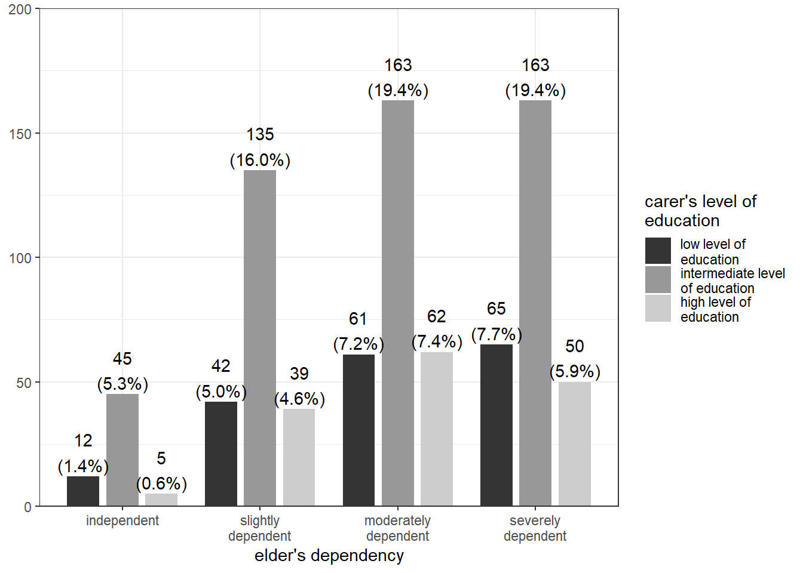
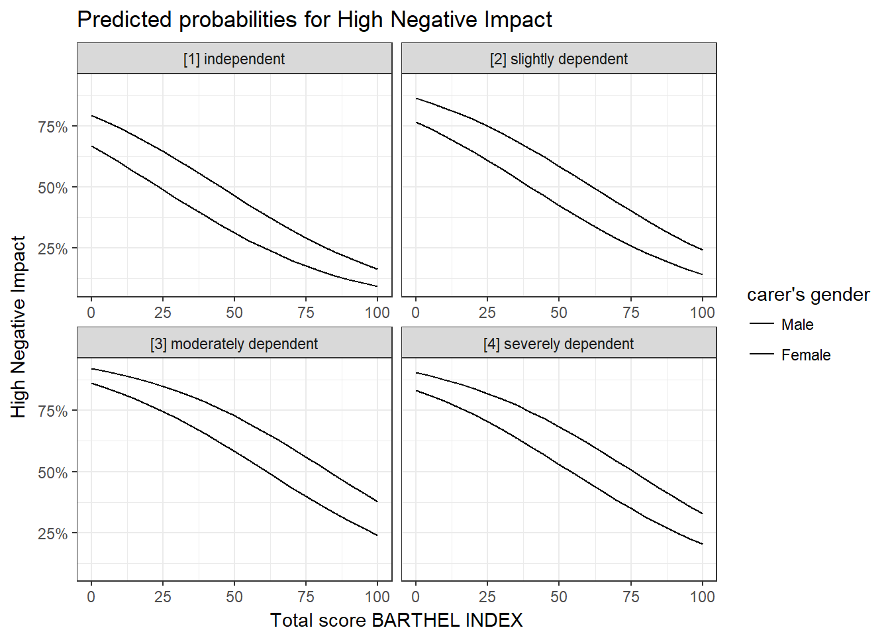
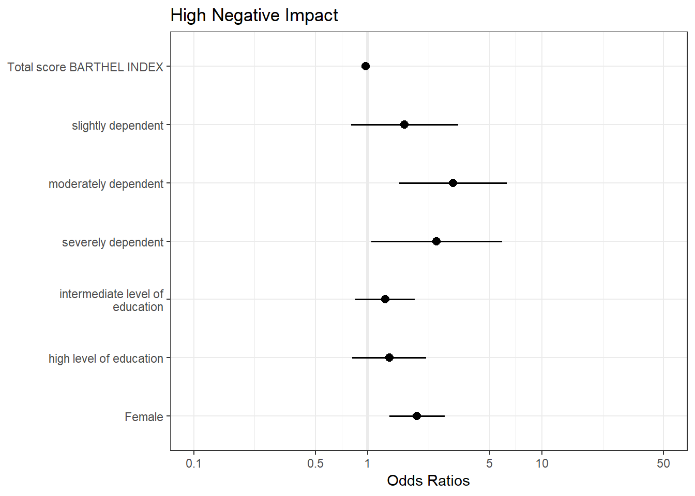

blackwhitefigures.RmdThis document shows examples how to create b/w figures, e.g. if you don’t want colored figures for print-journals.
There are two ways to create plots in black and white or greyscale. For bar plots, geom.colors = "gs" creates a plot using a greyscale (based on scales::grey_pal()).
library(sjPlot)
library(sjmisc)
library(sjlabelled)
library(ggplot2)
theme_set(theme_bw())
data(efc)
plot_grpfrq(efc$e42dep, efc$c172code, geom.colors = "gs")
Similar to barplots, lineplots - mostly from plot_model() - can be plotted in greyscale as well (with colors = "gs"). However, in most cases lines colored in greyscale are difficult to distinguish. In this case, plot_model() supports black & white figures with different linetypes. Use colors = "bw" to create a b/w-plot.
# create binrary response
y <- ifelse(efc$neg_c_7 < median(na.omit(efc$neg_c_7)), 0, 1)
# create data frame for fitting model
df <- data.frame(
y = to_factor(y),
sex = to_factor(efc$c161sex),
dep = to_factor(efc$e42dep),
barthel = efc$barthtot,
education = to_factor(efc$c172code)
)
# set variable label for response
set_label(df$y) <- "High Negative Impact"
# fit model
fit <- glm(y ~., data = df, family = binomial(link = "logit"))
# plot marginal effects
plot_model(
fit,
type = "pred",
terms = c("barthel", "sex","dep"),
colors = "bw",
ci.lvl = NA
)
Different linetypes do not apply to all linetyped plots, if these usually only plot a single line - so there’s no need for different linetypes, and you can just set colors = "black" (or colors = "bw").
# plot coefficients
plot_model(fit, colors = "black")